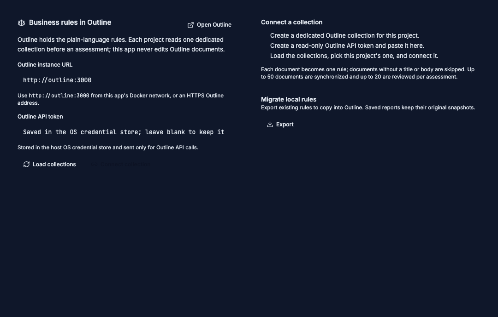
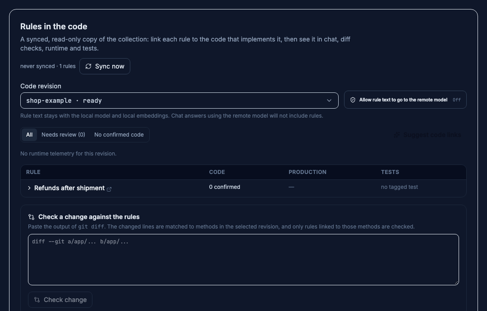
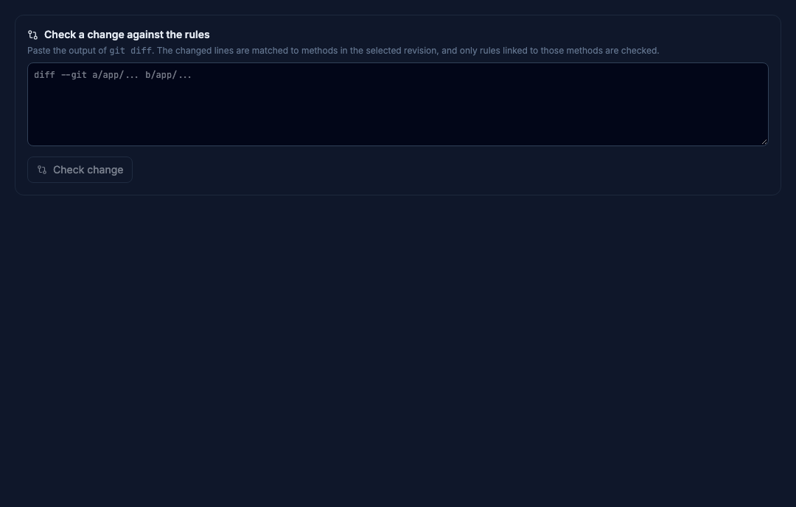

What makes a useful rule?
Write one decision per Outline document. Give it a title people will search for, then state the trigger, expected outcome and any exceptions. For example:
Refunds after shipmentBefore shipment, a customer may cancel a paid order and receive a refund. After shipment, reject the cancellation and direct the customer to the returns process.
This gives a developer two cases to test. “Follow the refund policy” does not say which branch should run. Keep discussion and meeting notes outside the dedicated collection so they are not imported as rules.
From a document to a code review
Choose the project
In Knowledge Base → Files and indexing, select the project ID that owns the policy. Open Business rules. You can connect documents before indexing code; you need a ready code revision to find implementations or check a diff.

Business rules tab inside the selected project’s Knowledge Base. Connect the Outline collection
Use Open Outline to create a dedicated collection and add the refund document there. Back in Developer Assistant, enter the Outline instance URL and a read-only API token that can read the collection. Select Load collections, choose the dedicated collection, then Connect collection. Look for Connected and Token saved. Edit policy in Outline; the app reads a copy.

Release connection panel with the Outline address, token field and collection setup instructions. Sync the rule and link its implementation
Under Rule documents, use Refresh to see the collection’s document titles. Under Rules in the code, select Sync now to update the copy used by the app. Choose a Code revision, expand the refund rule and select Suggest for this rule. Read the suggested method before choosing Confirm: the method that rejects cancellation implements the policy; one that merely formats a refund receipt does not. You can also add a known symbol, route or table by hand.

Rules in the code with Sync now, a code revision and the example refund document. Check a proposed change
With the relevant revision selected, paste a unified diff into Check a change against the rules and select Check change. For a patch that removes the shipment guard, inspect the implicated rule and changed lines, then test a shipped order. A result with no linked rule is a reason to check your links; it does not establish that the patch preserves policy.

Unified diff field and Check change action in the release interface.
Use the rule during everyday work
In Chat: Ask “Can a customer cancel after shipment?” Open the cited Outline document to check the policy and its sync time. If remote use of rule text is off, remote-model answers omit rules; use a local model for a rule-grounded answer.
In tests and assessments: Expand a rule and choose Generate test skeleton. Copy the draft into your suite, add assertions for both sides of the shipment boundary, and run it. The app does not write the test to your repository. In Code Quality, inspect the assessment’s rule review and its cited evidence.
After a policy change: Edit the document in Outline, sync again, and use Needs review to revisit links flagged after document or code changes. Choose Still holds only after checking the current implementation.
If a rule is missing
Check the project, collection, token access and last sync status. A document needs both a title and a body. The release syncs up to 50 documents, has a 12,000-character limit per document, and reviews up to 20 rules per assessment. Check the assessment sync summary for omitted or oversized documents.